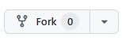
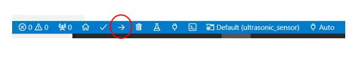
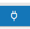

Visual Studio Code en PlatformIO
In deze sectie lees je hoe je Visual Studio Code (VS Code) en PlatformIO installeert voor het ontwikkelen van microcontrollerprojecten.
Installeren van Visual Studio Code
Ga naar de officiele website: https://code.visualstudio.com/.
Download de versie voor jouw besturingssysteem.
Volg de installatiestappen op het scherm.
Installeren van de PlatformIO-extensie
Open Visual Studio Code.
Open Extensions via het zijbalk-icoon of met
Ctrl+Shift+X.Zoek op
PlatformIO IDE.Klik op
Install.
PlatformIO gebruiken in VS Code
Klik na installatie op het PlatformIO-icoon in de zijbalk.
Open
PlatformIO Home.Kies
New Projectom een nieuw project te maken.
Verkrijgen van de workshopbestanden
Om te starten heb je de workshopbestanden nodig met code, schema’s en opdrachtinstructies.
Download de bestanden als ZIP via: Download Workshop Bestanden
Pak het ZIP-bestand uit in een map die je makkelijk terugvindt.
Als je al bekend bent met Git en github, kun je de bestanden ook via Github verkrijgen. Volg de onderstaande stappen:
Maak een account aan bij Github en login op dit account
Open de RealtimeSoftwareEngineering_workshop repository
Maak een Fork van de repository naar je eigen Github account door op het Fork icoon te klikken:

Volg de instructies, maar wijzig de naam van de nieuwe repository niet. Bevestig met Create Fork
Nu kun je de workshop clonen naar je lokale machine:
git clone https://github.com/<jouw_account_naam>/RealtimeSoftwareEngineering_workshop.git
Waarschuwing
Plaats de bestanden niet in een OneDrive-map. Dit kan compileerproblemen veroorzaken.
Testen van de installatie
Sluit het
NodeMCU32board of een ESP32-devkit-v1 via een USB kabel aan op de computer. Sluit de+12V inaan met een geschikte power-adapter(ingeval van NodeMCU32).Open in visual code de folder/map
<path-to-your-project>/workspace/examples/installatie_validatie.Compileer en download het programma naar de NodeMCU32 of ESP32-devkit-v1 met de
Uploadknop in de menubalk onder in het scherm

Let goed op de mededelingen in de terminal van
Visual Code, hieraan kun je zien of het uploaden succesvol is verlopen.Als het programma correct is geüpload, zou een LED op de ESP32-board moeten gaan knipperen. Dit is een z.g.n.
hartbeatLED, welke aangeeft dat het systeem actief is. Deze hartbeat is in alle software van deze course aanwezig. Als de led niet knippert, is de ESP32 mogelijkvastgelopenen moet mogelijk opnieuw worden opgestart. Je kunt dit doen met deRESETknop op het board.
Let op
Als in de Terminal een vergelijkbare melding verschijnt, zoals hieronder, dan is er een versieconflict is tussen Platformio en de geïnstalleerde ESP32 toolchain
IncompatiblePlatform: Development platform 'espressif32' is not compatible with
PlatformIO Core v6.2.0-post.1 and depends on PlatformIO Core >=6.2.0.
Volg dan de volgendeinstructies om het conflict op te lossen:
Open een termenil met de sneltoets
Ctrl+of via het menuTerminal->New Terminal` in Visual Studio Code.Voer het volgende commando uit om de ESP32 toolchain te updaten:
& "$env:USERPROFILE\.platformio\penv\Scripts\python.exe" -m pip install --force-reinstall --no-cache-dir --no-deps platformio==6.2.0
Controleer of het probleem is opgelost:
& "$env:USERPROFILE\.platformio\penv\Scripts\pio.exe" --version
# Expect: PlatformIO Core, version 6.2.0 (no ".post1" suffix)
Compileer en upload vervolgens het programma opnieuw naar de ESP32 om te controleren of het conflict is opgelost.
Gebruik van de monitor & terminal/console
Via een terminal of console kun je de status van het programma volgen.
Open de Terminal. Je kunt deze openen met het volgende icoon aan te klikken:

Voorbeelden van uitvoer
Voorbeeld van de programma-uitvoer in Console/Terminal:
Figuur 1. Console/Terminal terminal window
System initializing
> Heartbeat should be running, flashing onboard LED, pin 2...
FreeRTOS command server
Available commands:
version Show firmware information
cpuinfo Show ESP32 CPU/chip information
memory Show ESP32 heap memory information
tasks Show current task snapshot
help Show this help
echo Echo text, for example: echo hello
Tevens kun je nog informatie over de draaiende processen op de ESP32 opvragen d.m.v diverse commado’s.
commando |
doel |
|---|---|
version |
Show firmware information |
cpuinfo |
Show ESP32 CPU/chip information |
memory |
Show ESP32 heap memory information |
tasks |
Show current task snapshot |
help |
Show this help |
echo |
Echo text, for example: echo hello |
Voer als voorbeeld in de Console/Terminal het commando tasks uit om de status van alle actieve tasks te bekijken. Je zou nu tsk_User in de lijst moeten zien, met prioriteit 0.
Voorbeeld van tasks commando:
--- 10 tasks executing ---
Name State Prio Stack
----------------------------------------
CommandConsole RUN 1 1328
IDLE0 READY 0 576
IDLE1 READY 0 568
loopTask BLOCK 1 7244
tsk_Heartbeat BLOCK 1 860
esp_timer SUSP 22 8160
Tmr Svc BLOCK 1 3596
ipc1 SUSP 24 480
tsk_Printf BLOCK 23 700
ipc0 SUSP 24 484